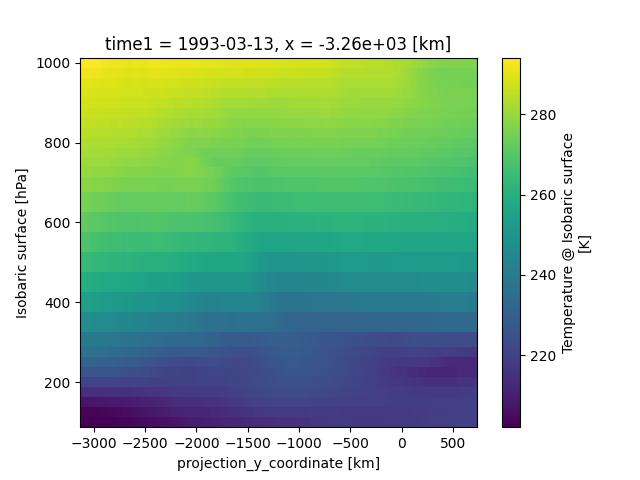
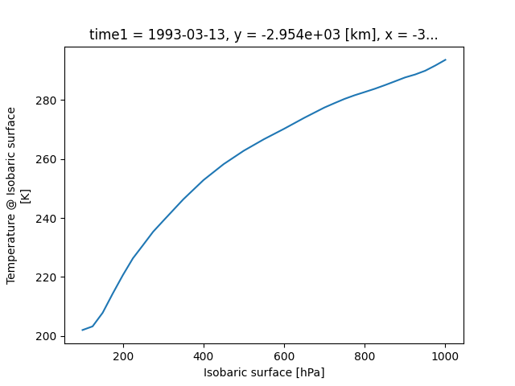

Xarray
Questions
How shall we deal with real-world datasets that are usually more than just raw numbers?
What is the advantage of using labelled multidimensional arrays?
What does Xarray add to Numpy and Pandas to address these questions?
Objectives
Learn how to apply operations over dimensions and select values by label
Understand Xarray’s DataArrays and Datasets
Learn how to easily plot data in Xarray
Learn how to turn your own data into an Xarray Dataset
We have already seen how Pandas simplifies working with tabular NumPy data by adding labels to columns and rows. In this lesson, we take a look at how xarray can be used to add the same functionality to multidimensional data. Let’s consider the following example:
Imagine we have a dataset representing temperature measurements across different heights, latitudes, and longitudes. We can store the temperature data as a 3D NumPy array where each axis corresponds to one of these dimensions:
import numpy as np
# Create a 3D numpy array: height x latitude x longitude
data = np.random.rand(10, 5, 5) # 10 heights, 5 latitudes, 5 longitudes
Let’s assume now we want to take a look at a specific value in the dataset at a certain height, latitude, and longitude. We could do this by indexing the array with the corresponding indices:
# Get the temperature at height 3, latitude 2, longitude 4
temperature = data[3, 2, 4]
OK, we got a value, but how do we know whether this value corresponds to the correct height, latitude and longitude? Are we sure that latitude was the second dimension in the dataset? Was it the second or third index that corresponds to the correct position? In pure NumPy, we are mostly left in the dark and need to manually keep track of these things.
Unfortunately, Pandas isn’t of much help either since it is not designed for data with more than 2 dimensions. Fortunately, some clever climate scientists have come up with a solution to this problem and created Xarray.
What is Xarray?
Xarray is a powerful Python library that introduces labelled multidimensional arrays. This means the axes have labels (=dimensions), each row/column has a label (coordinates), and labels can even have units of measurement. This makes it much easier to follow what the data in an array means and select specific portions of data.
We will first download a dataset similar to the example above to illustrate the advantages of Xarray. We will cover how to transform your own data into an Xarray Dataset later in this lecture.
Let us open a python shell and download a public dataset:
>>> from pythia_datasets import DATASETS
>>> filepath = DATASETS.fetch('NARR_19930313_0000.nc')
We can now import xarray and open the dataset. Le’ts take a look at what it contains:
>>> import xarray as xr
>>> ds = xr.open_dataset(filepath)
>>> ds
Output:
<xarray.Dataset> Size: 15MB
Dimensions: (time1: 1, isobaric1: 29, y: 119, x: 268)
Coordinates:
* time1 (time1) datetime64[ns] 8B 1993-03-13
* isobaric1 (isobaric1) float32 116B 100.0 125.0 ... 1e+03
* y (y) float32 476B -3.117e+03 ... 714.1
* x (x) float32 1kB -3.324e+03 ... 5.343e+03
Data variables:
u-component_of_wind_isobaric (time1, isobaric1, y, x) float32 4MB ...
LambertConformal_Projection int32 4B ...
lat (y, x) float64 255kB ...
lon (y, x) float64 255kB ...
Geopotential_height_isobaric (time1, isobaric1, y, x) float32 4MB ...
v-component_of_wind_isobaric (time1, isobaric1, y, x) float32 4MB ...
Temperature_isobaric (time1, isobaric1, y, x) float32 4MB ...
Attributes:
Originating_or_generating_Center: US National Weather Service, Nation...
Originating_or_generating_Subcenter: North American Regional Reanalysis ...
GRIB_table_version: 0,131
Generating_process_or_model: North American Regional Reanalysis ...
Conventions: CF-1.6
history: Read using CDM IOSP GribCollection v3
featureType: GRID
History: Translated to CF-1.0 Conventions by...
geospatial_lat_min: 10.753308882144761
geospatial_lat_max: 46.8308828962289
geospatial_lon_min: -153.88242040519995
geospatial_lon_max: -42.666108129242815
That was a lot of information at once, but let’s break it down.
Close to the top of the output we see the
Dimensionsof the dataset:time1,isobaric1,y, andx.Below the dimensions, we see the
Coordinatesof the dataset. These are for each dimension the labels for each value along that dimension. For example, we have a timestamp of each value along the first dimension (time1).The
Data variablesare the actual data stored in the dataset. We see that the dataset contains a bunch of arrays, most of which are 4-dimensional, where each dimension corresponds to one of theDimensionsdescribed above. There are also some 2-dimensional arrays that only have some of theDimensionsdescribed above.At the bottom, we see the
Attributesof the dataset. This is a dictionary that stores metadata about the dataset.
The following image shows the structure of this particular Xarray Dataset:

Accessing and manipulating data in Xarray
An xarray Dataset typically consists of multiple DataArrays. Our example dataset has 7 of them (u-component_of_wind_isobaric, LambertConformal_Projection, lat, lon, Geopotential_height_isobaric, v-component_of_wind_isobaric, Temperature_isobaric).
We can select a single DataArray from the dataset using a dictionary-like syntax:
>>> temperature_data = ds['Temperature_isobaric']
>>> temperature_data
Output:
<xarray.DataArray 'Temperature_isobaric' (time1: 1, isobaric1: 29, y: 119,
x: 268)> Size: 4MB
[924868 values with dtype=float32]
Coordinates:
* time1 (time1) datetime64[ns] 8B 1993-03-13
* isobaric1 (isobaric1) float32 116B 100.0 125.0 150.0 ... 950.0 975.0 1e+03
* y (y) float32 476B -3.117e+03 -3.084e+03 -3.052e+03 ... 681.6 714.1
* x (x) float32 1kB -3.324e+03 -3.292e+03 ... 5.311e+03 5.343e+03
Attributes:
long_name: Temperature @ Isobaric surface
units: K
description: Temperature
grid_mapping: LambertConformal_Projection
Grib_Variable_Id: VAR_7-15-131-11_L100
Grib1_Center: 7
Grib1_Subcenter: 15
Grib1_TableVersion: 131
Grib1_Parameter: 11
Grib1_Level_Type: 100
Grib1_Level_Desc: Isobaric surface
Xarray uses Numpy(-like) arrays under the hood, we can always access the underlying Numpy array using the .values attribute:
>>> temperature_numpy = ds['Temperature_isobaric'].values
>>> temperature_numpy
Output:
array([[[[201.88957, 202.2177 , 202.49895, ..., 195.10832, 195.23332,
195.37395],
[201.68645, 202.0302 , 202.3427 , ..., 195.24895, 195.38957,
195.51457],
[201.5302 , 201.87395, 202.20207, ..., 195.37395, 195.51457,
195.63957],
...,
[276.735 , 276.70374, 276.6881 , ..., 289.235 , 289.1725 ,
289.07874],
[276.86 , 276.84436, 276.78186, ..., 289.1881 , 289.11 ,
289.01624],
[277.01624, 276.82874, 276.82874, ..., 289.14124, 289.0475 ,
288.96936]]]], dtype=float32)
Xarray allows you to select data using the .sel() method, which uses the labels of the dimensions to extract data:
>>> ds['Temperature_isobaric'].sel(x='-3292.0078')
By default, you need to enter the exact coordinate, but often we want to select the closest value to some number. For this, you can use method='nearest':
>>> ds['Temperature_isobaric'].sel(x='-3292', method='nearest')
Output:
<xarray.DataArray 'Temperature_isobaric' (time1: 1, isobaric1: 29, y: 119)> Size: 14kB
array([[[202.2177 , 202.0302 , ..., 219.67082, 219.74895],
[202.58566, 202.58566, ..., 219.16379, 219.28879],
...,
[292.1622 , 292.14658, ..., 275.05283, 275.11533],
[294.1256 , 294.14124, ..., 276.84436, 276.82874]]], dtype=float32)
Coordinates:
* time1 (time1) datetime64[ns] 8B 1993-03-13
* isobaric1 (isobaric1) float32 116B 100.0 125.0 150.0 ... 950.0 975.0 1e+03
* y (y) float32 476B -3.117e+03 -3.084e+03 -3.052e+03 ... 681.6 714.1
x float32 4B -3.292e+03
Attributes:
long_name: Temperature @ Isobaric surface
units: K
description: Temperature
grid_mapping: LambertConformal_Projection
Grib_Variable_Id: VAR_7-15-131-11_L100
Grib1_Center: 7
Grib1_Subcenter: 15
Grib1_TableVersion: 131
Grib1_Parameter: 11
Grib1_Level_Type: 100
Grib1_Level_Desc: Isobaric surface
We can also access the same data by index using the .isel() method:
>>> ds['Temperature_isobaric'].isel(x=1)
Output:
<xarray.DataArray 'Temperature_isobaric' (time1: 1, isobaric1: 29, y: 119)> Size: 14kB
array([[[202.2177 , 202.0302 , ..., 219.67082, 219.74895],
[202.58566, 202.58566, ..., 219.16379, 219.28879],
...,
[292.1622 , 292.14658, ..., 275.05283, 275.11533],
[294.1256 , 294.14124, ..., 276.84436, 276.82874]]], dtype=float32)
Coordinates:
* time1 (time1) datetime64[ns] 8B 1993-03-13
* isobaric1 (isobaric1) float32 116B 100.0 125.0 150.0 ... 950.0 975.0 1e+03
* y (y) float32 476B -3.117e+03 -3.084e+03 -3.052e+03 ... 681.6 714.1
x float32 4B -3.292e+03
Attributes:
long_name: Temperature @ Isobaric surface
units: K
description: Temperature
grid_mapping: LambertConformal_Projection
Grib_Variable_Id: VAR_7-15-131-11_L100
Grib1_Center: 7
Grib1_Subcenter: 15
Grib1_TableVersion: 131
Grib1_Parameter: 11
Grib1_Level_Type: 100
Grib1_Level_Desc: Isobaric surface
A DataArray provides a lot of the functionality we expect from Numpy arrays, such as sum(), mean(), median(), min(), and max() that we can use these methods to aggregate data over one or multiple dimensions:
>>> # Calculate the mean over the 'isobaric1' dimension
>>> ds['Temperature_isobaric'].mean(dim='isobaric1')
Output:
<xarray.DataArray 'Temperature_isobaric' (time1: 1, y: 119, x: 268)> Size: 128kB
array([[[259.88446, 259.90222, 259.91678, ..., 262.61667, 262.6285 ,
262.65167],
[259.74866, 259.76752, 259.78638, ..., 262.5757 , 262.58218,
262.57516],
[259.6156 , 259.63498, 259.65115, ..., 262.52075, 262.51215,
262.4976 ],
...,
[249.8796 , 249.83649, 249.79501, ..., 254.43617, 254.49059,
254.54985],
[249.8505 , 249.80202, 249.75244, ..., 254.37044, 254.42378,
254.47711],
[249.82195, 249.75998, 249.71204, ..., 254.30956, 254.35805,
254.41139]]], dtype=float32)
Coordinates:
* time1 (time1) datetime64[ns] 8B 1993-03-13
* y (y) float32 476B -3.117e+03 -3.084e+03 -3.052e+03 ... 681.6 714.1
* x (x) float32 1kB -3.324e+03 -3.292e+03 ... 5.311e+03 5.343e+03
Let’s take a look at a concrete example and compare it to NumPy. We will calculate the max temperature over the ‘isobaric1’ dimension at a specific value for x:
>>> # Xarray
>>> ds['Temperature_isobaric'].sel(x='-3259.5447').max(dim='isobaric1')
Output:
array([[294.11 , 294.14124, 294.1256 , 294.0475 , 293.90686, 293.6256 ,
...,
276.46936, 276.59436, 276.6881 , 276.78186, 276.82874]],
dtype=float32)
In comparison, if we were to use plain Numpy, this would be:
>>> # NumPy
>>> np.max(temperature_numpy[:, :, :, 2 ], axis = 1)
Output:
array([[294.11 , 294.14124, 294.1256 , 294.0475 , 293.90686, 293.6256 ,
...,
276.46936, 276.59436, 276.6881 , 276.78186, 276.82874]],
dtype=float32)
As you can see, the Xarray code is much more readable and we didn’t need to keep track of the right indices and order of the dimensions.
Plotting data in Xarray
Like Pandas, Xarray comes with basic plotting capabilities. We can easily plot data in 1D and 2D using the .plot() method. Xarray uses a widely used plotting library called matplotlib for this. When calling the .plot() method, Xarray checks the dimensionality of the data and plots it accordingly. Let’s import matplotlib and plot the data:
>>> import matplotlib.pyplot as plt
>>> ds['Temperature_isobaric'].isel(x=2).plot()
>>> plt.show()
For a 2D DataArray the plot would resemble this example:

Note, that we didn’t specify the axes labels, Xarray automatically used the coordinates of the DataArray for the plot. This plot might not be one you include directly in a paper, but it is a great way to quickly visualize your data.
Let’s have a look at a dataslice of 1D data:
>>> ds['Temperature_isobaric'].isel(x=2, y=5).plot()
>>> plt.show()
The resulting plot detects the dimentionality of the data and plots it accordingly:

If the data has more than two dimensions, Xarray will plot a histogram of the data:
>>> ds['Temperature_isobaric'].plot()
>>> plt.show()
The resulting plot would look like this:

We can modify the plots by passing additional arguments to the .plot() method. Since we haven’t discussed the plotting library matplotlib in this course, we will not go into further detail here. You can find more information in the Xarray documentation.
Exercises 1
Exercises: Xarray-1
Download the NARR_19930313_0000.nc dataset have a look at all Data variables. Calculate the geopotential height at x=5148.3726 averaged over y and return the median value. You can use the .plot() method to check on the way whether you use the correct dimensions and indices.
Solutions: Xarray-1
One way of calculating this is:
>>> from pythia_datasets import DATASETS
>>> import xarray as xr
>>>
>>> filepath = DATASETS.fetch('NARR_19930313_0000.nc')
>>> ds = xr.open_dataset(filepath)
>>> ds['Geopotential_height_isobaric'].sel(x=5148.3726).mean('y').median()
<xarray.DataArray 'Geopotential_height_isobaric' ()> Size: 4B
array(4395.487, dtype=float32)
Coordinates:
x float32 4B 5.148e+03
Creating your own Xarray Dataset
Creating your own Xarray Dataset is quite simple. We can create a Dataset from scratch using basic Python data structures. Let’s create a simple weather dataset with pressure and humidity data with the following script:
import xarray as xr
import numpy as np
# Define coordinates using basic Python lists
time = ['2023-01-01', '2023-01-02', '2023-01-03', '2023-01-04', '2023-01-05']
location = ['Location1', 'Location2', 'Location3']
# Define data variables as numpy arrays
pressure_data = np.random.rand(5, 3) * 1000 # Random pressure data in hPa
humidity_data = np.random.rand(5, 3) * 100 # Random humidity data
# Put everything together to create the Dataset
ds = xr.Dataset(
data_vars = {
"pressure": (["time", "location"], pressure_data),
"humidity": (["time", "location"], humidity_data)
},
coords={
"time": time,
"location": location
},
attrs={
"description": "Weather data",
"creation_date": "2023-01-01",
"author": "Data Scientist"
}
)
Converting Xarray objects to NumPy, Pandas and NetCDF
Another handy feature of Xarray is the simple conversion between Xarray objects, NumPy arrays, Pandas DataFrames and even NetCDF files.
To convert an xarray DataArray to a NumPy array, you can use the .values attribute or the .to_numpy() method:
# Convert the 'pressure' DataArray to a NumPy array
pressure_numpy = ds['pressure'].values
# or
pressure_numpy = ds['pressure'].to_numpy()
To convert the entire Dataset or individual DataArrays to pandas DataFrames, use the .to_dataframe() method:
# Convert the entire Dataset to a DataFrame
df = ds.to_dataframe()
# Convert a single DataArray to DataFrame
pressure_df = ds['pressure'].to_dataframe()
To save the dataset as a NetCDF file, use the .to_netcdf() method:
# Save the Dataset as a NetCDF file
ds.to_netcdf('weather_data.nc')
Exercises 2
Exercises: Xarray-2
Let’s change from climate science to finance for this example. Put the stock prices and trading volumes of three companies in one dataset. Create an Xarray Dataset that uses time and company as dimensions and contains two DataArrays: stock_price and trading_volume. You can download the data as a pandas DataFrame with the following code:
import yfinance as yf
AAPL_df = yf.download("AAPL", start="2020-01-01", end="2024-01-01")
GOOGL_df = yf.download("GOOGL", start="2020-01-01", end="2024-01-01")
MSFT_df = yf.download("MSFT", start="2020-01-01", end="2024-01-01")
As a last thing, add the currency of the stock prices as an attribute to the Dataset.
Solutions: Xarray-2
We can use a script similar to this one:
import xarray as xr
import numpy as np
import yfinance as yf
start_date = "2020-01-01"
end_date = "2024-01-01"
AAPL_df = yf.download("AAPL", start=start_date, end=end_date)
GOOGL_df = yf.download("GOOGL", start=start_date, end=end_date)
MSFT_df = yf.download("MSFT", start=start_date, end=end_date)
stock_prices = np.array(
[
AAPL_df["Close"].values,
GOOGL_df["Close"].values,
MSFT_df["Close"].values,
]
)
trading_volumes = np.array(
[
AAPL_df["Volume"].values,
GOOGL_df["Volume"].values,
MSFT_df["Volume"].values,
]
)
companies = ["AAPL", "GOOGL", "MSFT"]
time = AAPL_df.index[:].strftime("%Y-%m-%d").tolist()
ds = xr.Dataset(
{
"stock_price": (["company", "time"], stock_prices[:, :, 0]),
"trading_volume": (["company", "time"], trading_volumes[:, :, 0]),
},
coords={"time": time, "company": companies},
attrs={"currency": "USD"},
)
Advanced Topics
We have barely scratched the surface of all the features Xarray has to offer. Hopefully this quick introduction has shown you whether Xarray is the right tool for your data analysis needs. If you are interested in learning more about Xarray, here are some topics for further reading:
Xarray integrates with Dask to support parallel computations and streaming computation on datasets that don’t fit into memory. If you work with datasets that are too large for your memory, have a read of the chapter Parallel computing with Dask in the Xarray documentation.
If you want to accelerate Xarray operations with your GPU, have a look at CuPy-Xarray.
Xarray can be combined with pint, a Python library that adds support for physical quantities to NumPy arrays. This blog post provides a good introduction to the topic.
You can extend Xarray with your own methods using the register_dataset_accessor() method. This is a powerful feature that allows you to add custom methods to your own Xarray Datasets.